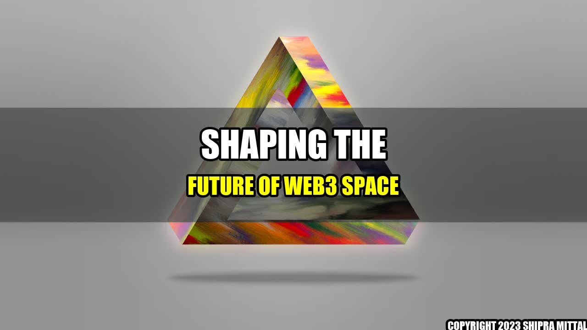

Shaping the Future of Web3 Space: Insights from NBX Warsaw Summit
Once upon a time, there was a young guy named John who was fascinated with blockchain technology and its potential to revolutionize the way we interact online. He was a curious mind, and always eager to learn more about the latest developments in the field. One day, he stumbled upon a tweet about the NBX Warsaw Summit, a gathering of experts and enthusiasts from around the world, discussing the future of Web3 space.
John knew he had to be there. He saved up some money, booked a flight, and arrived in Warsaw with nothing but his laptop and a burning curiosity. What he found there exceeded his wildest expectations. He met brilliant minds who were working on cutting-edge projects, he attended inspiring talks and workshops, and he came out of the summit with a head full of ideas and a heart full of hope.

The Power of Web3 Space
What John discovered at the NBX Warsaw Summit was the incredible power of Web3 space. This new technology offers us a decentralized, transparent, and secure way to interact online, without the need for middlemen, intermediaries, or gatekeepers. It enables us to own our data, protect our privacy, and engage in peer-to-peer transactions with anyone, anywhere in the world.
But Web3 space is more than just a technical solution. It's a movement, a paradigm shift, a new way of thinking about human relationships and values. It challenges the dominant models of centralized power and profit, and offers a vision of a more equitable, inclusive, and sustainable world.
The potential of Web3 space is enormous, and we can already see some quantifiable examples of its impact:
- Decentralized finance: Web3 space enables us to create financial systems that are more efficient, accessible, and fair. The total value locked in decentralized finance (DeFi) protocols has exploded in the past year, from $1 billion in 2020 to over $80 billion in 2021.
- NFTs: Web3 space allows us to create unique and verifiable digital assets, such as non-fungible tokens (NFTs), that have transformed the art world and other industries. The NFT market reached a record $2.5 billion in the first half of 2021, up from $13.7 million in the same period in 2020.
- Data ownership: Web3 space gives us the ability to own and control our data, which has become a precious commodity in the digital age. Companies like Brave Browser, which rewards users for their attention and data, have attracted millions of users and disrupted the traditional advertising model.
The Challenges Ahead
Despite its potential, Web3 space faces many challenges, both technical and social. The nascent technology is still experimental, and there are many security, scalability, and usability issues that need to be addressed. Moreover, Web3 space is not immune to the larger societal problems we face, such as inequality, discrimination, and polarization. There is a danger that Web3 space could replicate or amplify these problems, rather than solve them.
However, the community that gathered at the NBX Warsaw Summit is aware of these challenges and is committed to addressing them in a collaborative and transparent manner. They are aware that Web3 space is not a silver bullet, but rather a tool that can be used for good or for bad, depending on how we design and deploy it.
Conclusion: Three Key Points
- Web3 space is a powerful and transformative technology: It enables us to create decentralized, transparent, and secure systems that can transform finance, art, data ownership, and many other areas of our lives.
- Web3 space is not a panacea: It faces many challenges, both technical and social, and there is a danger that it could replicate or amplify the problems of the traditional web. We must approach it with a critical and ethical mindset.
- Web3 space is a community effort: It requires collaboration, innovation, and participation from all stakeholders, including developers, investors, regulators, and users. We must work together to build a Web3 space that serves the common good.
References
Hashtags and Keywords
- #Web3Space
- #BlockchainTechnology
- #NBXWarsawSummit
- #DecentralizedFinance
- #NFTs
- #DataOwnership
- #Collaboration
- #CommonGood
- #Ethics
- #Innovation
- #Regulation
Akash Mittal Tech Article
Share on Twitter Share on LinkedIn